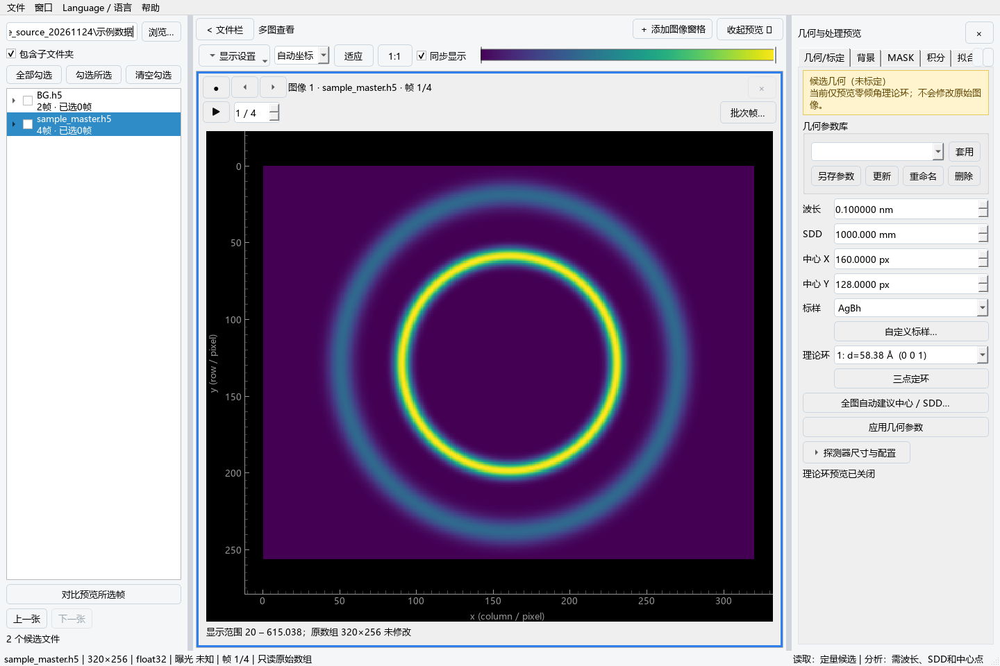
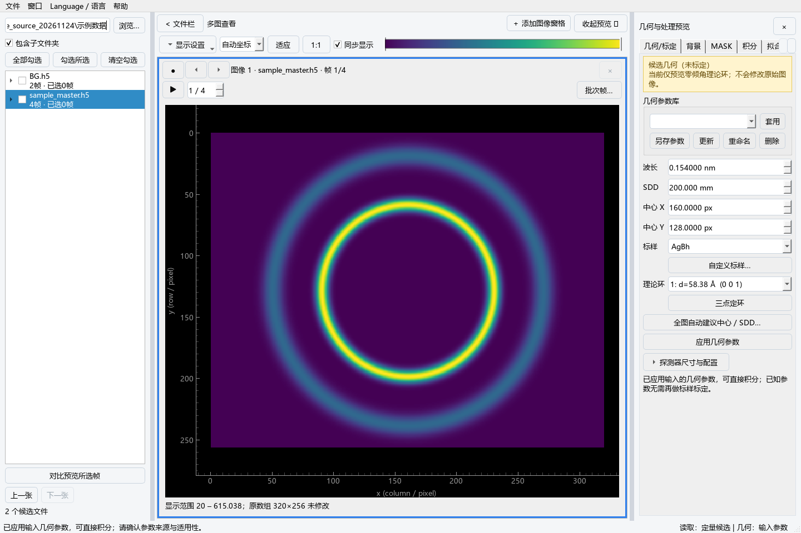
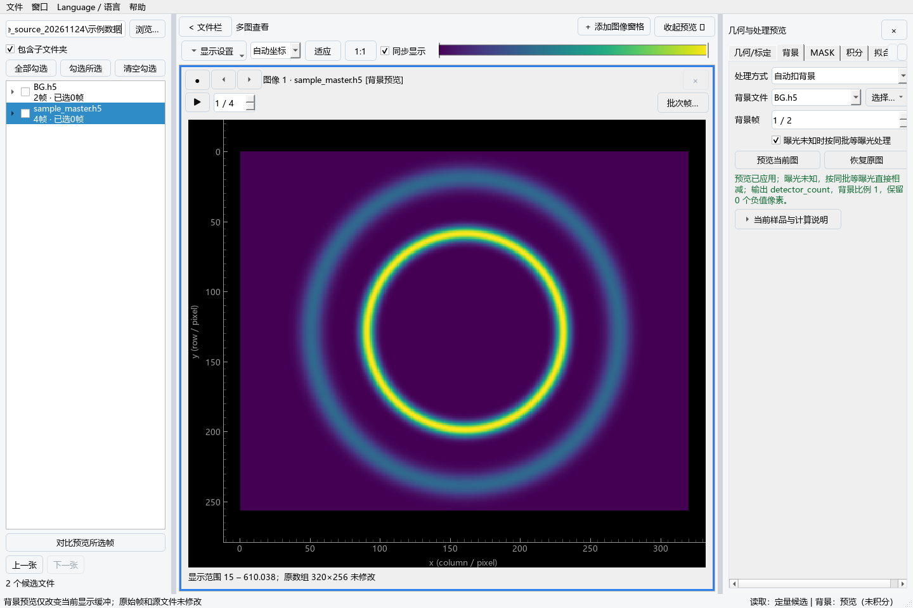
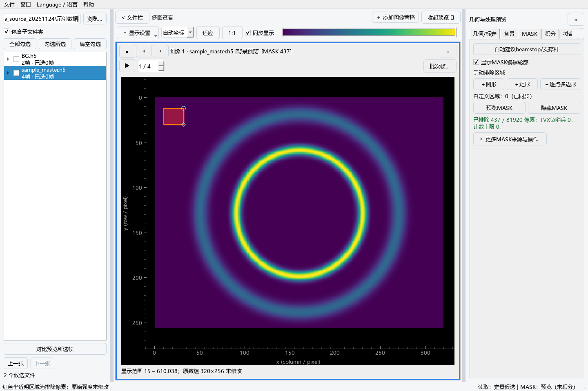
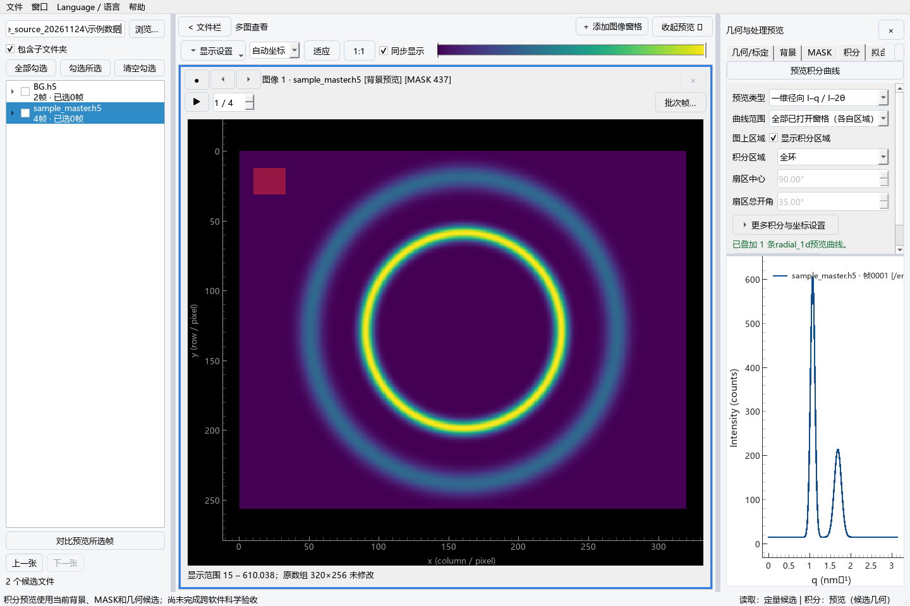
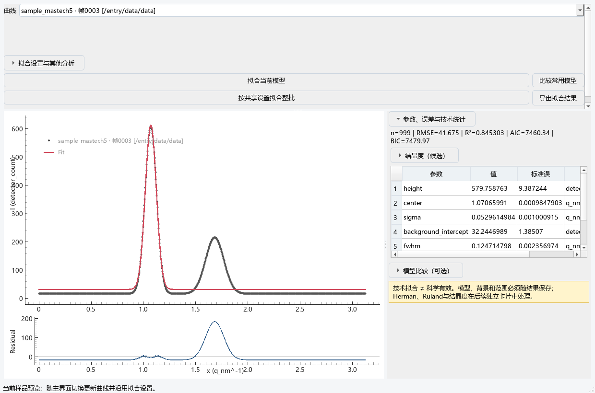
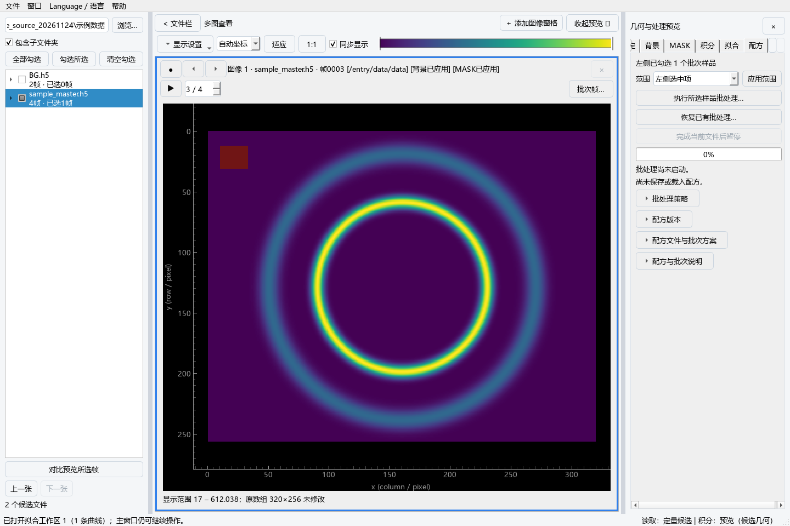
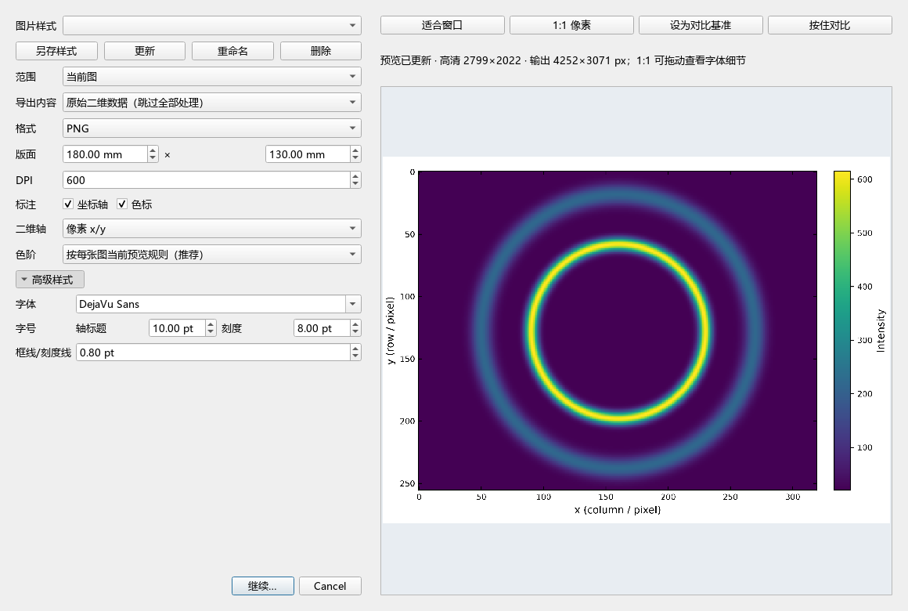
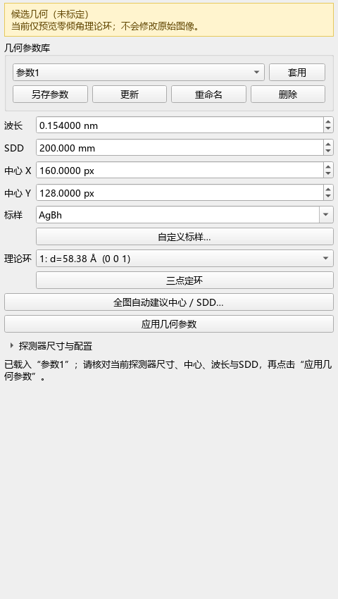

XRelay 1.0.2 图文操作手册
X射线散射数据处理与分析 · Windows x64 · 离线手册
首次使用：解压整个文件夹，运行XRelay.exe。无需安装Python。请将原始数据和处理输出分开放置，不在压缩包内直接运行。本文包含操作说明；参数取值应根据仪器和实验确认。
1. 导入数据与浏览帧
解压整个软件文件夹，双击 XRelay.exe。点击左侧“浏览…”或拖入数据文件夹。HDF5 优先打开 master，保留它引用的 data 文件及相对位置；软件按真实外链关系合并来源。展开样品树可勾选帧；“批次帧…”可选连续区间。播放/暂停共用图标，输入帧号后自动跳转。

合成示例数据，界面离屏截图；用于说明操作，不代表实测科学验收。2. 确认几何参数
点击右上角“几何与处理预览”展开处理栏。核对波长、像素尺寸、SDD与中心。已知几何可直接输入；没有标样时选择“无标样”，自行输入波长和SDD，用自动建议或三点确定中心。标样校准后应检查多条理论环，再点击“应用几何参数”。示例图使用合成几何，不能照抄其数值。

合成示例数据，界面离屏截图；用于说明操作，不代表实测科学验收。3. 选择背景
在“背景”页选择自动扣背景、不扣背景或数据已扣背景。可以选择文件/文件夹，或直接拖入。多帧背景需确认数据集和背景帧。已知曝光按时间归一化，曝光未知时仅按你确认的等曝光策略相减。点击“预览当前图”；负值不会被静默截断。

合成示例数据，界面离屏截图；用于说明操作，不代表实测科学验收。4. 设置 MASK
使用探测器坏点信息、外部MASK或手绘圆形/矩形/多边形区域，点击“预览MASK”。排除区域以半透明覆盖显示。自动建议只是候选，需要检查beamstop、支撑杆和模块间隙。MASK不填补缺失信号，不改变源文件。

合成示例数据，界面离屏截图；用于说明操作，不代表实测科学验收。5. 生成积分曲线
在“积分”页选择径向或方位角、全环或扇区、径向范围、角度及点数。“更多积分与坐标设置”中可调整单位和算法选项。拖动图上的区域，松开后刷新完整精度曲线。“曲线范围”可选“左侧勾选样品／帧”，不用打开所有二维窗格也能比较多条曲线。径向单位决定积分分箱，横／纵坐标决定曲线显示；切换q和2θ时核对单位。执行过的背景/MASK/积分在换帧或换样品后自动跟随；恢复原图可停止预览流程跟随。

合成示例数据，界面离屏截图；用于说明操作，不代表实测科学验收。6. 拟合与导出
从“拟合”页打开已生成曲线，选择模型、背景、峰数与拟合范围。检查原始点、拟合线、残差及参数。当前单曲线工作区可随主界面换帧重新拟合，整批和外部曲线工作区保持独立。在预览曲线右键打开绘图选项、曲线选择或导出；可以修改曲线别名、图例、字体、线型及上／下／左／右轴刻度。只导出当前勾选显示的曲线，数据与图片各有独立预览。保存XLSX或图像后核对来源及单位；R²高不等于物理模型正确。Ruland、结晶度及取向计算须确认适用模型、峰归属和范围。

合成示例数据，界面离屏截图；用于说明操作，不代表实测科学验收。7. 批处理所选样品与帧
左侧勾选真正进入批次的样品和帧，背景文件不要作为普通样品勾选。在“配方”页检查范围与处理参数，然后执行所选样品批处理。暂停在当前文件完成后生效；恢复时选择原批次的batch_manifest.json。汇总CSV按样品、实际帧号和数据集区分列；单帧预览导出只包含当前已生成曲线，不能替代整批导出。

合成示例数据，界面离屏截图；用于说明操作，不代表实测科学验收。8. 高清导出预览、样式与命名
导出2D图窗口左侧设置版面、DPI、坐标轴、字体字号与线宽，右侧为独立高清成品预览。展开高级样式不改变预览区域大小；使用1:1像素拖动检查细节，设为对比基准后按住对比查看变化。另存样式默认命名样式1、2，可更新、重命名、删除，重启后继续使用。批量导出选择上级文件夹后可输入结果文件夹名称，留空沿用旧默认规则；单个文件可在另存为窗口修改文件名。原图导出跳过背景和手绘MASK，但探测器固有无效像素不参与色阶计算，源数组不改动。

合成示例数据，界面离屏截图；用于说明操作，不代表实测科学验收。9. 几何参数库与帧勾选
几何栏可将当前几何另存为参数1、参数2等，支持更新、重命名和删除。新数据可选参数并点击套用；先核对图像尺寸、像素、中心、SDD和波长，再应用几何参数，不自动沿用或宣称已标定。文件勾选即全选帧，取消即清空；可以只勾选单帧或多帧，文件半选状态表示部分帧进入批次。

合成示例数据，界面离屏截图；用于说明操作，不代表实测科学验收。可选 AI Agent 与诊断
常规桌面处理不需要 AI 账号。需要连接外部 Agent 时，打开“窗口 → AI Agent 接口”，选择允许读取与输出的目录，生成对应客户端配置，检查本地服务，再按客户端说明加入 MCP。支持配置模板不等于所有客户端版本都已验收；外部客户端如何联网及向模型发送内容，取决于其配置与授权。
遇到卡顿、异常或显示问题时，使用“帮助 → 导出诊断报告…”；无法启动可运行随包的“导出诊断报告.cmd”。诊断在本地记录、不自动上传。记录软件版本、Windows、显示缩放、操作步骤及等待时间，检查敏感信息后再分享报告。
常见问题
- 只有exe打不开：必须保留完整_internal目录和运行库。
- HDF5找不到图像：检查master引用的数据块是否齐全；不要只复制master。
- 背景不能相减：确认尺寸、仪器设置、曝光及数据集/帧选择。
- 新电脑显示或启动问题：提供软件版本、Windows版本、错误信息及最小可共享示例，勿直接发送涉密实验数据。首次几何和积分缓存建立可能稍慢。
- 项目跨电脑迁移：保留原始文件，项目可按文件身份重新定位；不要以相同文件名替代不同数据。
- 默认用户文件位于%LOCALAPPDATA%\XRelay；实际导出目录可自行选择。升级前保留项目和结果，退出旧版本后将新版解压到新文件夹。
- XRD的.raw/.rasx原始扫描未纳入本版新增支持，不能把它们当作二维探测器图。通用文本曲线按列映射导入。
反馈与科学边界
请记录复现步骤、样品/帧身份、背景和几何参数、模型和范围，并保留处理清单。绝对强度、跨仪器标定、Ruland和结晶度等须以相应参考数据独立验证。源码授权及第三方许可见随包文件；图文手册不包含实验原始数据。
文档组织参考
参考BioXTAS RAW的“基础处理→分析→保存导出→几何设置”教程组织方式，截图和说明均为XRelay本项目重新制作，未复制其图片或代码。
许可、署名与第三方组件
开发者：张久天 / Jiutian Zhang。原创部分采用 XRelay 免费使用与再分发许可 1.0，允许学术、企业及商业数据处理；改名包装软件销售须书面授权。完整条款见软件目录 LICENSE。
PySide6/Qt、FabIO 等涉及 LGPL 的组件保留其原许可和修改、替换、重新链接及调试修改所需权利；见 licenses、_sources 及 LIBRARY_REPLACEMENT.md。更改第三方库不改变原始实验数据。